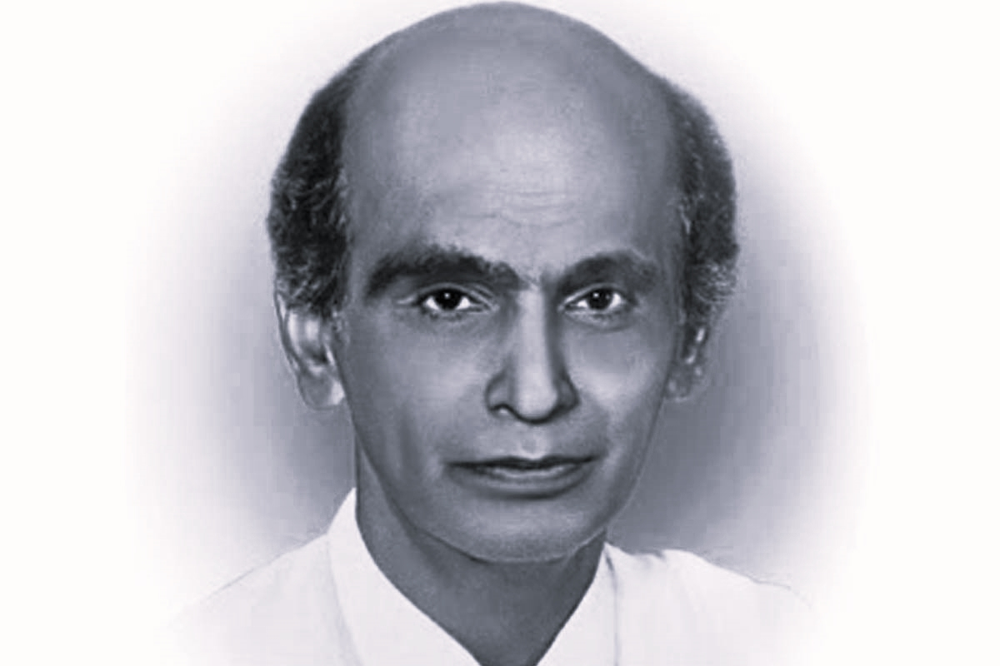
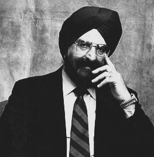

Science HEROES
1. Gopalswamy Doraiswamy Naidu
Revered as the ‘Edison of India,’ GD Naidu is often credited with influencing the Industrial Revolution in India
The creator of the first electric motor in the country is also acknowledged for his wondrous inventions like the mechanical calculator, the ticket vending machine, early electric razor, fruit juice extractor, kerosene-run-fan and a projection TV.
His electric company New Electric Works was the place where India’s first electric motor was manufactured. In fact, Naidu went on to the extent of starting an indigenous company for almost every new invention of his
2. Anna Mani

Back in the days when women were barely visible in the scientific domain, Anna Modayil Mani from Travancore, Kerala, was a distinguished meteorologist and physicist who astounded the world with her amazing inventions.
She also pioneered the research to utilise solar and wind power as renewable sources of energy and set up her instruments in over 700 sites. Her study on ozone level measurement using her apparatus ‘ozonesonde’ is also strikingly remarkable.
3. Narinder Singh Kapany

Considered the ‘Father of Fibre Optics’, this Punjab-born scientist’s glorifying discovery of communication through optical fibres paved the way for the ‘internet’ as well as medical marvels like laser surgeries or endoscopic imaging.
Born in 1927 to a Sikh family in Moga, Punjab, Kapany studied at the University of Agra and later joined Imperial College, London to conduct extensive research in technology.
He joined the University of Rochester as a faculty member and later went on to become a successful entrepreneur in Silicon Valley, USA. At present, the 92-year-old is credited for over 100 patents in his name and also runs a philanthropic organisation called the Sikh Foundation.